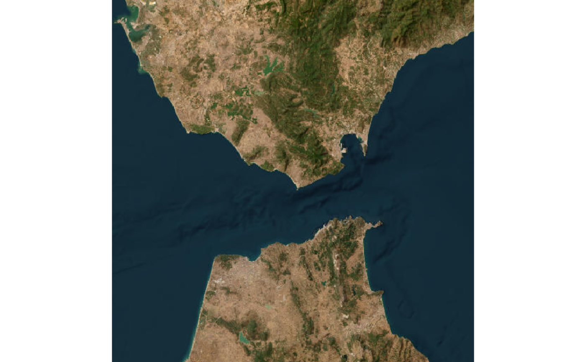
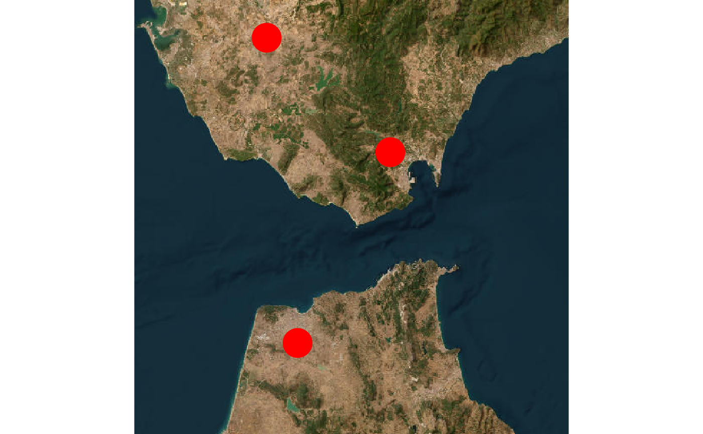
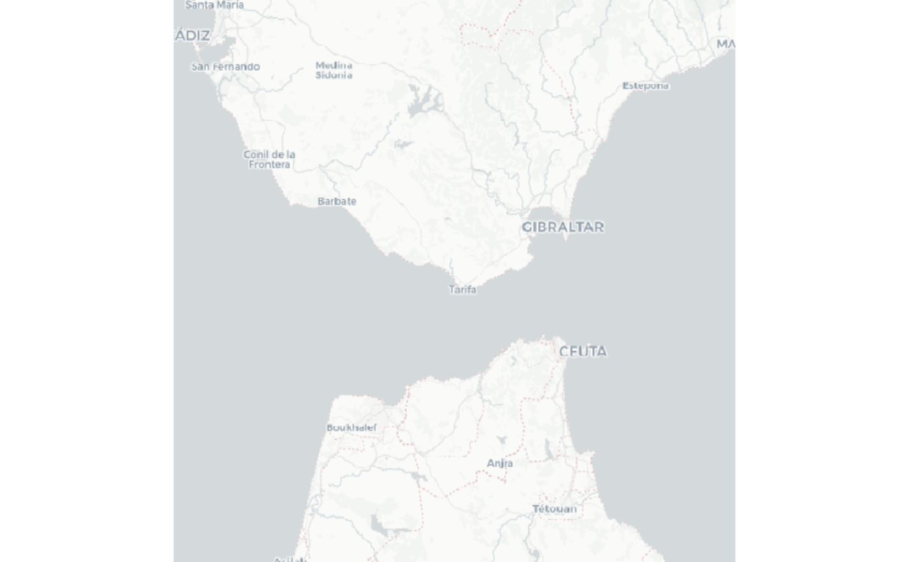
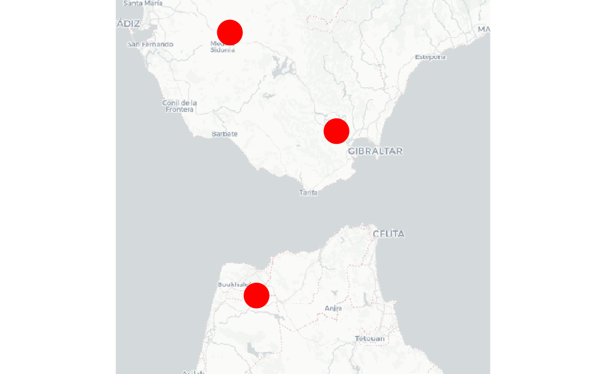
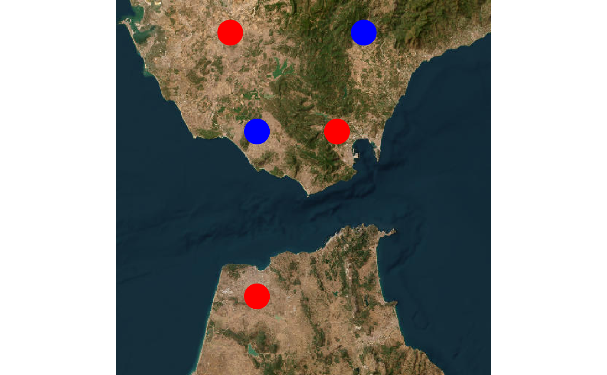
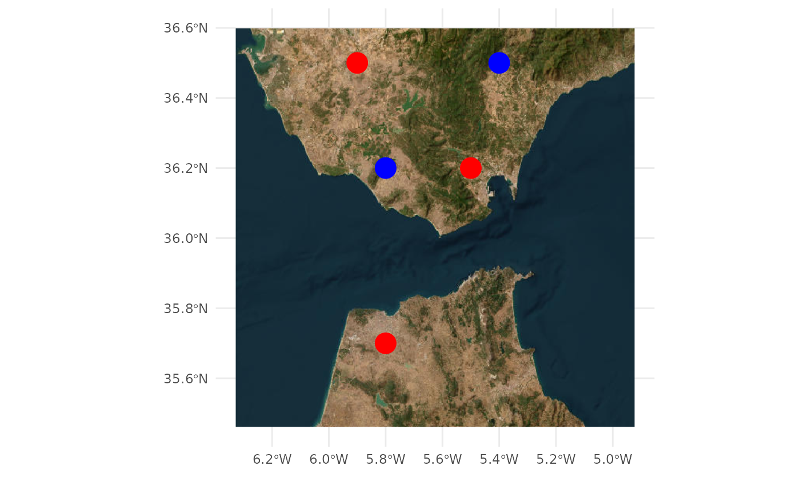

Map species occurrences
Plot map of species occurrences (or any set of georeferenced points) on top of different background layers.
occmap(locs, ras = NULL, bg = "google", proj = "+init=epsg:4326", pcol = "red", alpha = 1, psize = 1, add = FALSE, leaflet.base, mapmisc_server = "maptoolkit", filename = "occmap.kmz", ...)
Arguments
| locs | A matrix, dataframe, SpatialPoints or SpatialPointsDataFrame containing coordinates of species occurrences. If locs is a matrix or dataframe, it will be converted to a spatial object using |
|---|---|
| ras | Raster* object to be used as background for points. Default is NULL, in which case a background map defined by |
| bg | Type of background map. Either
'google' for Google maps background (using |
| proj | Character string specifying the projection of coordinates data (see |
| pcol | Colour to be used for points. Default is "red". |
| alpha | Colour transparency for points, between 0 (fully transparent) and 1 (fully opaque). |
| psize | Point size. Default is 1 (cex = 1). |
| add | Logical. Add these occurrences to a previous map? (e.g. for a new species). Default is FALSE. Note this feature doesn't work for all map types. For leaflet maps, when add = TRUE, a leaflet basemap (e.g. as produced by a previous call to occmap) must be provided (see |
| leaflet.base | Leaflet map to be used as basemap to add further points when add is TRUE. |
| mapmisc_server | character. Server/type of background map to be used when bg = "mapmisc". Run |
| filename | Character. Path and filename of the KMZ file produced when bg = "kml". |
| ... | additional parameters to be passed to dismo::gmap if bg == 'google' plot if bg == 'coast' ggmap::get_map if bg == 'ggmap' leafletR::leaflet if bg == 'leaflet' raster::plot or raster::plotRGB if bg == 'mapmisc' See these functions help files for details. |
Value
A map (plot), unless bg = 'KML' in which case a kmz file is saved to be explored with Google Earth. In some cases, a raster layer, leaflet object, or ggplot object is returned in addition to the map.
Details
If using ggmap and stamen maps, large regions seem to give problems.
Examples
# Using acaule dataset from dismo package: library(dismo)#>#>#> #>#> #> #>data(acaule) occmap(locs=acaule)#>#>occmap(locs=acaule, bg="google", type="satellite") # using options from dismo:gmap#>#># Watercolor map from Stamen using ggmap # NB: use small regions, otherwise give error to download map tiles locs_redux <- subset(acaule, lon>-80 & lon< -60 & lat>-30 & lat< -10) occmap(locs=locs_redux, bg="ggmap", maptype='watercolor', source='stamen', pcol="darkgreen", psize=4)#>#>#>#>#>#>#>#>#>#>#>#>#>#>#>#>#># Plot occurrences in a specific country: occmap(locs=subset(acaule, country=="Bolivia"))#>#># Plot occurrences within given coordinates occmap(locs=subset(acaule, lon>-80 & lon< -60 & lat>-30 & lat< -10))#>#># can use click() aftewards to identify specific points # Add transparency to points occmap(locs=acaule, pcol="red", alpha=0.7)#>#># Save plot directly to file pdf("map.pdf", paper="a4r") occmap(locs=acaule, type="satellite", scale=2)#>#>dev.off()#> RStudioGD #> 2## Providing spatial objects ## data(meuse) coordinates(meuse) <- ~x+y proj4string(meuse) <- CRS("+init=epsg:28992") occmap(meuse)#alternatively, provide projection argument: data(meuse) coordinates(meuse) <- ~x+y#> Error in `coordinates<-`(`*tmp*`, value = ~x + y): setting coordinates cannot be done on Spatial objects, where they have already been setoccmap(meuse, proj = "+init=epsg:28992")